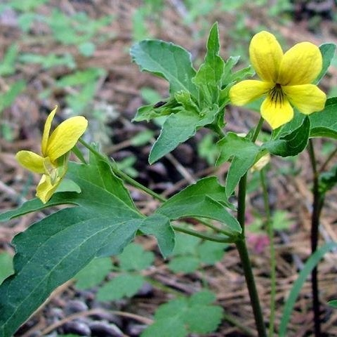

Viola lobata
Common name
Pine violet
Family
Violaceae
Family common name
Violet family
Blooms
April - August
Habitat and range
Dry shady or open places in foothill woodland, chaparral, and mixed coniferous and upper montane forests, below 7600'.
Range Map